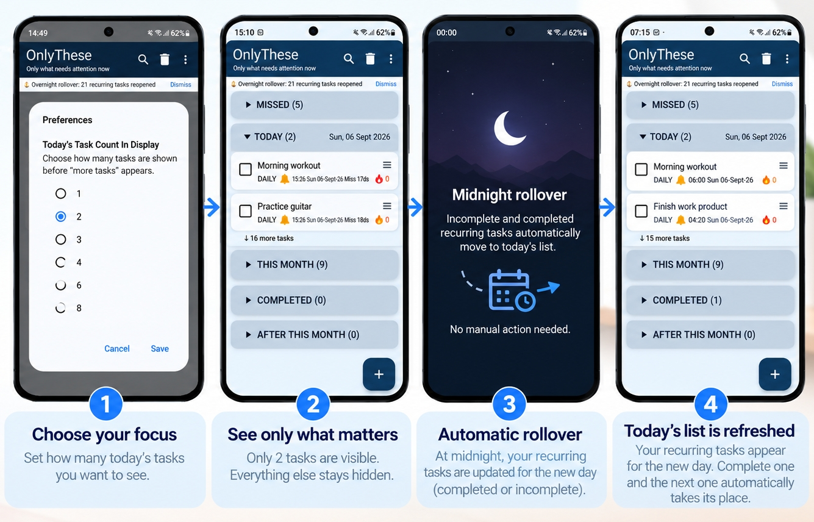

OnlyThese · Start by reducing the number of choices
How to Decide What Task to Do Now
If your task manager shows everything at once, choosing the next task can become harder than doing the task itself.
Start by reducing the number of choices
First identify the tasks that genuinely need attention now. Then work from a small visible set rather than repeatedly reconsidering every future commitment.
The aim is not to manage less. It is to decide what deserves your attention now.
What to do
- Separate today's work from tasks that can wait.
- Choose a small number of tasks for immediate attention.
- Order those tasks according to what you want to do first.
- Leave future commitments where they can be retrieved later.
How OnlyThese applies this idea
OnlyThese applies this idea through its Today view. You choose how many Today tasks are displayed and can drag tasks to reorder them. The main product page explains the complete task cycle and other features.

Want to see the full OnlyThese product?
The main OnlyThese page has the complete overview, how it works, features, video and information about the current closed test.
OnlyThese — Show only what needs attention now.Currently in Google Play closed testing
Learn more about OnlyThese →